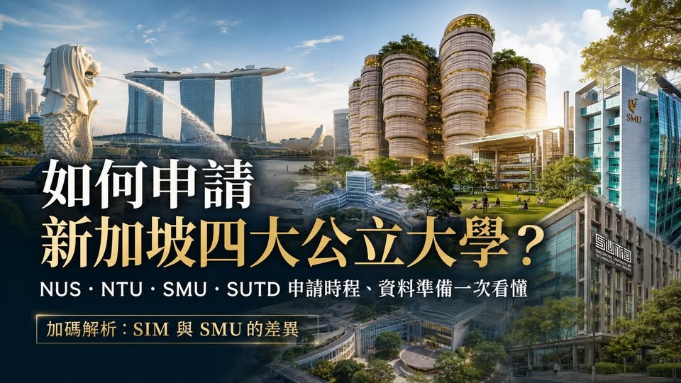

《看懂制度，選對世界》第一集
如何申請新加坡四大公立大學？
如何申請新加坡四大公立大學？NUS、NTU、SMU、SUTD申請時程、資料準備一次整理 新加坡距離台灣近、以英語授課，又是亞洲重要的金融、科技與國際企業中心，因此，越來越多台灣高中生將新加坡列入海外升學選項。

如何申請新加坡四大公立大學？NUS、NTU、SMU、SUTD申請時程、資料準備一次整理 新加坡距離台灣近、以英語授課，又是亞洲重要的金融、科技與國際企業中心，因此，越來越多台灣高中生將新加坡列入海外升學選項。 其中，最受台灣家長關注的四所大學包括： NUS國立新加坡大學 NTU南洋理工大學 SMU新加坡管理大學 SUTD新加坡科技設計大學 不過，新加坡教育部正式使用的名稱是「自治大學」（Autonomous Universities）。目前新加坡共有六所自治大學，除了上述四校，也包括SIT新加坡理工大學及SUSS新加坡社科大學。 .
一、NUS NUS是新加坡規模完整的綜合研究型大學，科系涵蓋商學、資訊、工程、理學、人文社會、法律、醫學、建築、設計及跨領域課程。申請時程 以2026／27學年度為例，國際學歷申請時間為： 2025年12月3日至2026年2月23日 錄取結果約於5月中旬至7月底公布。NUS每年原則上只有一個主要的大學部申請期間，錯過截止日期，通常需要等待下一個入學年度。準備申請2027年入學者，可先參考這個時間安排，但仍須等待NUS公布2027／28學年度的正式日期。台灣學測生應注意什麼？
以台灣普通高中及學測資格申請NUS，學生必須已完成學測，並提交至少四個科目的成績，其中應包括英文及數學。學生也需要提供IELTS、TOEFL、PTE Academic或C1 Advanced等英文能力證明。沒有提交學測成績者，則可能需要依規定提供SAT、ACT或AP等標準化考試成績。特別需要注意的是，預計在申請截止日後才完成高中畢業考試的學生，不能使用NUS的「Taiwan Senior High School」資格申請。
二、NTU NTU是新加坡重要的綜合研究型大學，尤其以工程、科技、資訊、人工智慧、理學、商學及跨領域研究受到關注。申請時程 以2026年入學的台灣學測申請組為例，申請期間為： 2025年10月15日至2026年1月20日 入選面試的申請者，通常在3月底前後收到通知，最終結果約於6月前公布。台灣學測最低申請門檻 NTU目前公布的台灣學測最低申請資格為： 2019年後學測四科合計至少56級分，滿分60級分。
學生還需符合一項英文或標準化考試要求，例如： IELTS總分至少6.0，寫作與口說至少6.0 SAT至少1250 PTE Academic至少55 ACT綜合成績至少30 但這些只是最低申請資格。熱門科系、商管課程、雙學位及非理工科系，實際競爭標準可能更高。最後進入審查階段的台灣申請者，通常還需要參加面試。三、SMU SMU位於新加坡市中心，是一所研究密集型自治大學，以小班討論、課堂互動及seminar教學方式著稱。
申請時程 以2026／27學年度為例，國際學生申請時間為： 2025年11月17日至2026年3月19日 標準化考試成績原則上須於2026年3月31日前提交。入選學生通常在3月至5月參加面試或測驗，錄取結果則於5月至7月陸續公布。多數國際學歷申請者必須提交以下其中一項： SAT、ACT、IELTS Academic、TOEFL、PTE Academic、C1 Advanced或AST。準備SMU申請時，除了維持學業成績，也應提早練習英文自我介紹、選系動機、時事分析、團體討論及臨場問答。
四、SUTD SUTD是一所以科技、工程、人工智慧、建築及設計為核心的大學，強調跨領域學習、設計思考及解決問題的能力。相較於傳統上先選定單一科系的方式，SUTD更重視學生能否整合數學、科學、工程、運算及設計。申請時程 以2026年國際學歷申請為例，申請期間為： 2026年1月2日至2026年3月2日 入選者最遲約於4月底前收到線上或實體面談通知，申請結果通常在5月中旬公布。
若學生的高中課程不是以英語授課，通常需要提交IELTS、TOEFL、SAT、ACT、PTE Academic或C1 Advanced，但校方沒有為所有申請者訂定單一最低分數，而是綜合評估學術與非學術表現。除了高中成績，學生也可以提交研究、程式設計、科展、創業、設計作品、領導經驗、實習或社區服務成果。申請新加坡大學要準備哪些資料？
不同學校及科系要求不完全相同，但台灣學生通常需要準備以下資料： 1護照與個人資料 2高中歷年成績單 3畢業與升學考試成績 依照學生實際修讀的課程提交： 台灣學測GSAT IB Diploma A-Level AP與美國高中課程 加拿大OSSD 成績單 LTU OSSD 台加高中雙聯學制 SAT或ACT 就讀OSSD、IB或A-Level的台灣學生，應使用相應的國際學歷資格申請，而不是因國籍為台灣就一律選擇Taiwan Senior High School。
4英文能力證明 各校、各科系的最低要求不同，法律、商管及高競爭課程的實際錄取標準也可能高於公開門檻。5活動與學習成果 6申請短文與面試 . 政府學費補助不是沒有條件 新加坡政府的Tuition Grant Scheme，可以降低符合資格學生的部分學費。但國際學生及新加坡永久居民若接受Tuition Grant，畢業後須履行三年工作義務，一般須受僱於符合規定的新加坡實體。
. 結語：申請新加坡大學，先確認「學歷資格」再看校名 申請新加坡大學的第一步，不是立即填寫申請表，而是先確認學生將使用哪一種高中資格： 台灣學測、IB、A-Level、AP、美國高中課程或加拿大OSSD，其申請時間、標準化考試及文件要求都可能不同。越早確認申請資格、科系先修要求與考試規劃，學生越有時間補強英文、數學、科學及個人學習成果，也能避免高三下學期才發現已錯過申請截止日。